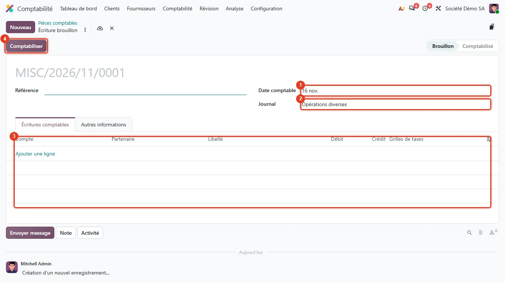

Comptabiliser la paie et payer les salaires
Objectif. Enregistrer l'écriture de paie du mois puis le paiement des salaires.
Menu Odoo 15Comptabilité > Comptabilité > Pièces comptables
Étapes
- Cliquez sur Nouveau, choisissez le journal Salaires (2) et la date de fin de mois (1).
- Saisissez les lignes (3) d'après le livre de paie : salaires bruts (66), charges sociales, retenues, net à payer (42).
- Vérifiez que débit = crédit, puis enregistrez en brouillon.
- Le validateur contrôle et clique sur Comptabiliser (4).
- Payez ensuite les salaires depuis la banque et rapprochez le relevé.

À vérifier
- Le compte « personnel, rémunérations dues » revient à zéro après le paiement.
À éviter
- Ne mélangez pas plusieurs mois dans la même pièce.
Exercice
Saisissez une paie simplifiée de 3 lignes et faites-la valider.